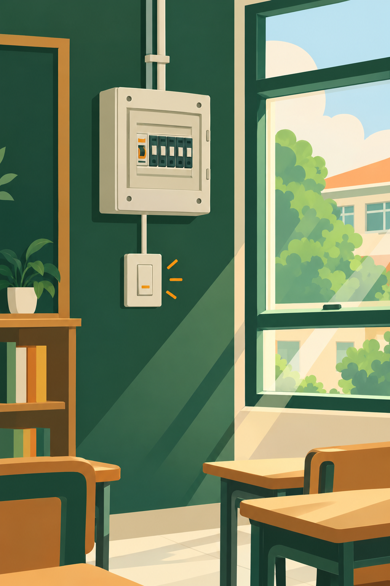

Hemat Energi Dimulai dari Langkah Kecil Kita
Setiap lampu yang dimatikan adalah bagian dari upaya kita menjaga energi untuk masa depan sekolah.

Kampanye Ini Bukan Sekadar Imbauan
Konservasi dan Penghematan Energi adalah kampanye yang dibuat oleh siswa untuk mengajak seluruh warga sekolah, mulai dari siswa, guru, hingga staf, agar lebih sadar dalam menggunakan energi setiap hari.
Bukan sekadar poster di dinding, kampanye ini mengajak kita memahami mengapa kebiasaan kecil seperti mematikan lampu, mencabut charger, dan memanfaatkan cahaya alami punya arti besar bagi sekolah dan lingkungan di sekitarnya.
Energi yang Kita Pakai Tidak Datang dari Ruang Kosong
Listrik yang menyalakan lampu kelas, kipas angin, dan proyektor berasal dari sumber daya yang butuh waktu lama untuk pulih. Semakin boros kita menggunakannya, semakin besar pula bebannya bagi lingkungan di masa depan.
Kampanye ini mengajak kita berhenti sejenak dan bertanya, apakah cara kita menggunakan energi hari ini sudah cukup bertanggung jawab.
